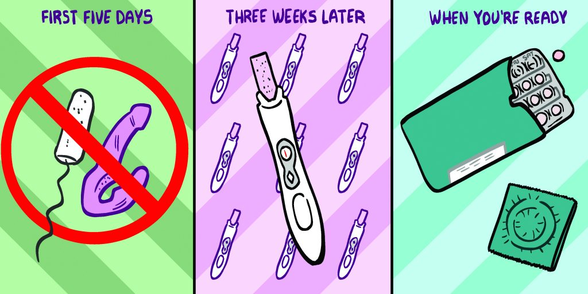

text (md) · PDF: screen · print
By Arielle Swernoff
Illustrated by Mattie Lubchansky
January 9, 2020
For as long as people have gotten pregnant, people have given themselves abortions. Sometimes, these methods have been brutal, toxic, or bizarre. But across history, there have been people who used plants and herbs safely and effectively. From the Bronze Age until the 1st or 2nd century BCE, silphium, a plant native to Libya, was used as a safe and effective contraceptive and abortifacient. It's said the plant was so popular that it was harvested to extinction. More recently, enslaved Black people in the American South devised numerous herbal treatments to terminate unwanted pregnancies, some of which are still used today.
In 2022, one safe way to perform a self-managed abortion is with pills --- the same ones administered at doctors' offices. Unfortunately, safe and affordable medical care isn't accessible everywhere or to everyone. Since the 2010 midterm elections, we've seen anti-choice legislation spread across the country at unprecedented speed. From mandatory waiting periods to laws regulating the width of hallways in abortion clinics, targeted restrictions on abortion providers (known as TRAP laws) have shut down hundreds of clinics. As of this writing, the Supreme Court is poised to overturn Roe v. Wade, and it is expected that abortion will become illegal or heavily restricted in dozens of states.
Everyone deserves to control their own reproduction. This guide to self-managing your abortion using misoprostol (which causes uterine contractions), either alone or in combination with mifepristone (which blocks a hormone that allows a pregnancy to continue), is intended as a community resource and to help de-stigmatize self-managed abortion.
Disclaimer: The decision to terminate a pregnancy is a personal one, and this article does not intend to influence or encourage any person's individual decision, but rather to provide reliable information. I am neither a lawyer nor a medical professional, and this guide should not be a substitute for medical or legal advice. The information below has been compiled from a variety of sources, including the World Health Organization, Aid Access, Women on Web, Women Help Women, Reproaction, If/When/How, Plan C Pills, Safe2Choose, How to Use Abortion Pills, Aid Access, Self Managed Abortion Safe and Supported, Ipas, and Robin Marty's Handbook for a Post-Roe America, as well as from my own organizing work and relationships with reproductive justice advocates. This article is not regularly updated, and individuals who are considering self-managing abortion should refer directly to these resources for more detailed medical or legal guidance.
To be clear: self-managed abortion is safe. According to a 2018 statement from Physicians for Reproductive Health, "self-administered medication abortion is as safe, effective and acceptable to patients and providers as healthcare facility-based medication administration." Numerous medical groups, including the World Health Organization, have endorsed self-managed abortion in the first trimester as "safe, feasible, and acceptable."
However, self-managing an abortion could put a person at legal risk. Since this article was initially published in 2019, state laws criminalizing abortion have multiplied. Advocates are aware of 24 people who have been prosecuted for self-managing their abortions between 2000 and 2021, some of them in states where the practice isn't technically criminalized. And people who are disproportionately targeted by law enforcement (people of color, trans people, unhoused people, and undocumented people, for example) are at greater risk of legal punishment. For a few legal resources, check out the "More Information" section at the end of this article.
First, check how far along you are in pregnancy. The FDA has approved medication abortion with mifepristone and misoprostol up to 10 weeks from the first day of a person's last menstrual period, and the World Health Organization considers abortion with both medications safe and effective until 12 weeks since a person's last period. Keep in mind that contrary to popular belief, pregnancy is not counted from the "moment of conception," but from the first day of your last period.
You should not use this method if:
You have a disease called porphyria
You have a bleeding disorder
You are taking anticoagulants
You have chronic adrenal failure and/or use long-term systemic corticosteroid therapy
It's very unlikely you would have any of the diseases or treatments listed above and not already know about it. Additionally, you shouldn't use this method if you know you're allergic to misoprostol, mifepristone, or prostaglandins. If you know you have an ectopic pregnancy (a pregnancy implanted outside the womb), this method will not work and you should seek medical treatment from a doctor.
It's extremely rare to get pregnant if you have an IUD, but if that's the case, you should have it removed before having an abortion.
When doctors perform medical abortions using pills, they use two drugs: mifepristone and misoprostol. Mifepristone is harder to obtain in person but widely available online.
To have an abortion with mifepristone and misoprostol, you will need one 200mg pill of mifepristone and four tablets of misoprostol at 200 mcg each.
To have an abortion with misoprostol only, you will need 12 tablets of misoprostol at 200 mcg each.
There are several ways you can get them:
Abortion pills are commonly purchased online. There are several websites where people have been able to purchase mifepristone and misoprostol together. Plan C Pills (plancpills.org) has researched a number of telehealth services and online pharmacies that provide abortion pill delivery. Aid Access (aidaccess.org) also provides "online consult for abortion pills by mail."
Some people who were not able to purchase misoprostol and mifepristone together have been able to find an internet vet supply store or online pharmacy (for humans!) that sells misoprostol only without a prescription.
In addition to helping people manage abortions at home, misoprostol is sometimes used to treat stomach ulcers, so it's kept behind the counter at most US pharmacies. In many Latin American countries, as well as in some border communities in the US, you can get it over the counter under the brand name Cytotec. If you're trying to get misoprostol without a prescription in the US, advocates have found these tips helpful:
Choose the right location: It might be easier to get misoprostol at a local pharmacy than at a chain like CVS or Rite Aid.
Have a man go for you: A pharmacist is less likely to suspect a man of using pills to induce abortion, and is more likely to give him the pills.
Have an excuse: Tell the pharmacist your grandparent with rheumatoid arthritis is visiting and forgot their pills at home.
Having a medical abortion can be very physically unpleasant (think: bad flu), so plan on being out of commission for a full day after taking the misoprostol. Some people experience nausea, so consider eating lightly or sticking to foods that are easy to settle. Alcohol or drugs are a no no --- you want to be able to pay full attention to your body. The chances of something going wrong are extremely low, but just in case, it's good to be within an hour of a hospital (make that half an hour if you have anemia).
Just like building IKEA furniture, managing your abortion is easier and safer with a friend. Make sure this friend is someone you trust to be discreet, to help protect you from legal risk.
The following is a summary of instructions from Women On Web and the World Health Organization on how to use mifepristone and misoprostol for a safe abortion up to 12 weeks of pregnancy:
You will take your pills over the course of two days. First, swallow your one tablet of mifepristone (200mg).
Twenty-four hours later, put 4 tablets of misoprostol (200 mcg each) under your tongue and let them dissolve for 30 minutes. You can swallow your saliva. After 30 minutes, you can spit out any remains of the tablets.
The following is a summary of instructions from How to Use Abortion Pills on how to use misoprostol only for a safe abortion before 10 weeks of pregnancy:
Put the first four tablets under your tongue and let them dissolve for 30 minutes. You can swallow your saliva, but don't swallow the tablets until at least 30 minutes have passed. At that point, you can swallow what remains of the tablets.
After three hours, repeat with the next four tablets, making sure to dissolve them for 30 minutes under your tongue instead of swallowing. Three hours after that, repeat with the final four tablets.
(In the unlikely case that you purchased a pill with the brand name Arthrotec or Oxaprost, the misoprostol will be coating a painkiller. If that's the case, spit out the pills after thirty minutes. If you forget and accidentally swallow the pills, you should still proceed. The painkiller may slightly reduce the chances of the misoprostol working, but only by a little bit.)
DON'T swallow all the misoprostol pills together. Nausea is a common side effect, and you don't want to puke them up.
DON'T put the pills in your vagina. If taken under the tongue as directed, a doctor won't be able to tell if you've induced an abortion or had a "natural" miscarriage. If you put the pills in your vagina, a doctor can find the residue.
This part probably won't be fun! You'll know your abortion has begun when you start to cramp and bleed, which can happen anywhere from 30 minutes to several hours after you take the misoprostol. To avoid infection, use pads for the bleeding, and not tampons or a cup. Some unpleasant side effects of misoprostol can include dizziness, nausea, vomiting, diarrhea, and headaches, as well as fever and chills. You can take ibuprofen and anti-nausea medications as needed --- they won't interact poorly with misoprostol. Try to hydrate as best you can, and rest as much as you need to.
Fewer than 3% of people self-managing an abortion with pills require further medical care. Women on Waves, Safe2Choose, and Women Help Women recommend immediately seeking medical care if a person has any of the following symptoms:
Bleeding through two or more maxi pads per hour for more than two hours (this means that the pads are completely soaked through, front to back and side to side). This occurs in less than 1% of cases.
A fever above 100°F for more than 24 hours, or a fever above 102°F for any amount of time. This could be a sign of infection, and it's usually treated with antibiotics.
Intense abdominal pain that lasts for more than a few hours.
The good news is, if you've followed the instructions, there's no medical way for a doctor to tell you've taken pills to induce abortion. You can say that you think you're having a miscarriage. The only way a doctor will know is if you or your friend share the information, which you absolutely do not have to do. Your symptoms, complications, and the treatment you'll receive will look exactly the same as if you were having a natural miscarriage, which doctors treat routinely.

Don't put anything in your vagina for five days after your abortion --- that means no tampons, sex toys, fingers, or penises. You should also avoid intense physical activity. You can expect to bleed as though you're having your period for anywhere from a few days to a few weeks after you take the pills. After four weeks, take a pregnancy test to make sure the abortion was complete (earlier than four weeks, and you may get a false positive).
If it comes back positive: There are a couple of things that could be happening here. For one, you could still be pregnant (this is more likely if you didn't experience cramping or significant bleeding when you took the pills).
It's also possible there is remaining tissue in your uterus, or that your pregnancy implanted outside of the uterus (this is known as an ectopic pregnancy). Doctors have safe and established protocols for dealing with these issues (remember: you don't have to tell them you self-induced abortion), but both can cause serious complications if left alone. Ectopic pregnancies cannot be carried to term, and if you think you have one, you should seek medical care right away.
If it comes back negative: Congratulations! You have given yourself an abortion. You might not be in the mood to get busy right away, but if you are, use condoms or another form of birth control --- you can get pregnant immediately after an abortion.
More Information: For more detailed information and Q&As on how people use these medications, you can check out Aid Access, Women on Web, Safe2Choose, How to Use Abortion Pills, or Self Managed Abortion Safe and Supported (SASS). These sites all provide more detail than the length of this article allows.
Legal: If/When/How maintains the Repro Legal Help Line (www.reprolegalhelpline.org/), where you can get information about your rights around self-managed abortion. You can contact them by leaving a voicemail on their helpline (844-868-2812) or using their secure online form (https://www.reprolegalhelpline.org/sma-contact-the-helpline/#secureform).
The Repro Legal Defense fund provides financial support for criminal cases where someone is alleged to have self-managed an abortion, including bail/bond money, attorney fees, court costs, and more. You or your attorney can request help at reprolegaldefensefund.org/get-help/.
You can also contact National Advocates for Pregnant Women, which provides free legal representation to people charged with crimes in relationship to their pregnancies, at http://www.advocatesforpregnantwomen.org.
Speaking with a doctor or counselor: If you live in the United States, you can call or text the Miscarriage + Abortion Hotline at 1-833-246-2632. They are available between 8am and 11pm in all continental US time zones, and will respond within the hour.
You can also chat with a trained counselor and advocate by emailing info@safe2choose.org, or using their live chat counseling service at https://safe2choose.org/abortion-counseling. Each of these websites also includes instructions and Q&A for self-administering an abortion with pills.
Advocacy: If you want to get involved in the campaign to destigmatize and spread awareness of self-managed abortion in the United States, you can connect with Reproaction, a reproductive justice direct action group, at https://reproaction.org/.
Arielle Swernoff is an organizer currently working on climate justice campaigns in New York. She previously worked in electoral politics, supporting progressive state and local candidates, and in public health communications.
Mattie Lubchansky is a cartoonist and illustrator living in Queens, NY. You can find their work on The Nib, where they are associate editor, or at matt-lub.com.